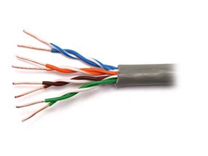
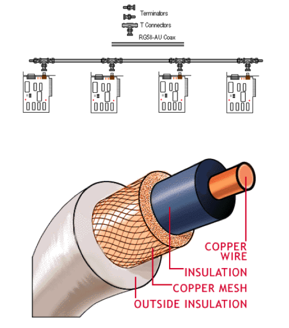
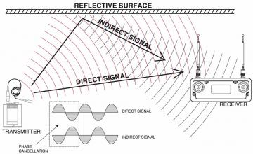
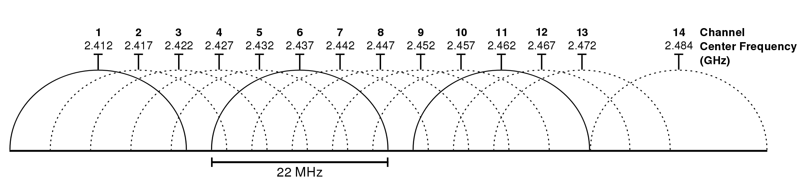
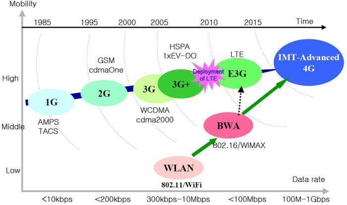
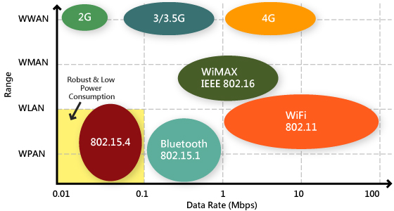

Sistemas Operativos y Redes
Capa Física
Semestre 2022-1
Cristian Ruz - cruz@ing.puc.cl
Departamento de Ciencia de la Computación
Pontificia Universidad Católica de Chile
Transmisión de Señales
Objetivo: Transmisión de bits a través de un medio físico
¿Cómo transmitir información a través de un cable?
- Mediante varaciones de voltaje: $v(t)$
Pero la señal no es perfecta
Pero existen las Series de Fourier (Jean-Baptiste Fourier, S.XIX)
Cualquier función periódica $g(t)$, con periodo $T$ puede ser construida como una suma, posiblemente infinita, de senos y cosenos
\[g(t) = \frac{1}{2}c + \sum^\infty_{n=1}a_n \sin(2\pi nft) + \sum^\infty_{n=1}b_n \cos(2\pi nft) \]
- Donde $f=1/T$ es la frecuencia fundamental
- $a_n$ y $b_n$ son las amplitudes de los $n$-ésimo armónicos
- $c$ es una constante
Conociendo $a_n$, $b_n$, $c$ y $T$, se puede reconstruir la función
Múltiplos de una frecuencia fundamental
Reconstruyendo señales
Transmisión del caracter ASCII
b$=01100010$Hay un límite de lo que se puede mandar por un canal. Lo dijo Claude Shannon (1948)
Máxima tasa de transferencia $= B \log_2 (1+\frac{S}{N}) \text{bps}$
- $S$: potencia de señal; $N$: potencia de ruido
- $S/N$: SNR, Signal-to-Noise Ratio, expresado en escala logarítmica decibeles
- $S/N=10=10\text{db}$;$100=20\text{db}$;$1000=30\text{db}$
Ejemplo: línea ADSL sobre red telefónica: 1MHz
- Ancho de banda depende de SNR.
- SNR $=40$db, $1\sim 2$Km (bueno)
- Ancho de banda máximo: 13Mbps
Medios de transmisión
Cableado estructurado
- Cables trenzados se comportan como una antena
- Categorías según cuan trenzados están: 3, 5, 5b, 6
- Recorren varios kilómetros ($\sim 5$km) sin atenuarse
- Uso para telefonía, ethernet

Cable coaxial de cobre
- Alta resistencia al ruido externo
- Ancho de banda depende de la distancia
- Fácil de modificar para insertar nodos nuevos

Fibra óptica
- Transmisión y detección de luz
- Cables hechos de vidrio
- Alta velocidad de transferencia

- Monomodo: un haz de luz
- Multimodo: múltiples haces a distintos ángulos
Medios inalámbricos
Medios inalámbricos terrestres
- Señal se debilita en el aire al propagarse
- Interferencia con otras señales: asignación de frecuencias
- Propagación multicamino: señales llegan por distintos caminos

Estándares inalámbricos

IEEE 802.11, Wireless LAN

- Estación base: Access Point (AP)
- BSS: Basic Service Set
- Modos de operación: infrastructure y ad-hoc
IEEE 802.11, Wireless LAN}
Canales. Espectro 2.4GHz $\sim$ 2.485GHz dividido en 11 canales
- Administrador de AP elige el canal
- Host escucha canales y detecta beacons enviados por AP
- Beacons contienen SSID (nombre de AP) y MAC Address de AP

Mobile standards

Mobile standards
